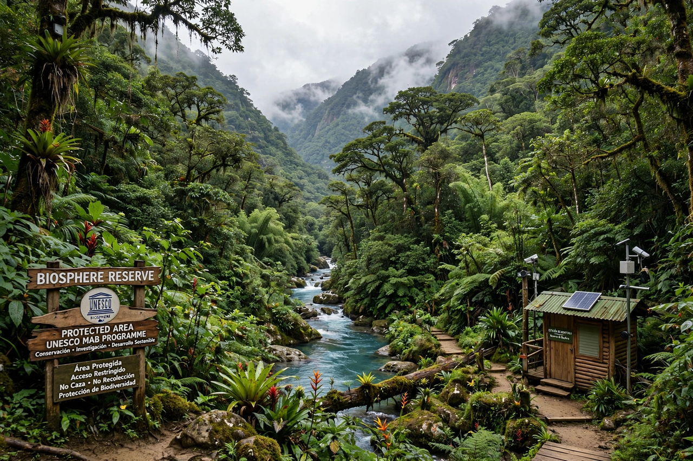

Biosphere reserve
Biosphere reserves are areas comprising terrestrial, marine and coastal ecosystems, designated under UNESCO's Man and the Biosphere Programme (MAB) to promote the conservation of biological diversity together with the sustainable development of the people who live in and around them. Unlike strict nature reserves, a biosphere reserve is explicitly a "learning place for sustainable development", integrating conservation, development and research. As of the mid-2020s the World Network of Biosphere Reserves comprises more than 700 sites in over 130 countries.
 | |
| Designating body | UNESCO Man and the Biosphere Programme |
|---|---|
| Established | 1971 (MAB); first designations 1976 |
| Number | 750+ sites in 130+ countries |
Zonation
Each reserve is organised into three interrelated zones:
- Core area — a strictly protected zone contributing to the conservation of landscapes, ecosystems, species and genetic variation.
- Buffer zone — surrounds or adjoins the core; used for activities compatible with sound ecological practice, including research, monitoring, training and environmentally friendly tourism and farming.
- Transition area — the outer part, where sustainable resource management practices are promoted and developed in cooperation with local communities and enterprises.
Functions
Biosphere reserves serve three complementary functions: conservation of biodiversity and cultural diversity; development that is socio-culturally and environmentally sustainable; and logistic support for research, monitoring, education and training. Designation does not itself impose legal protection — sites remain under national sovereignty and are usually underpinned by existing protected areas — but inclusion is subject to periodic review every ten years, and sites that no longer meet the criteria can be withdrawn (the United States withdrew 17 sites in 2017, for example, while others have left at national request).
History
The concept grew out of UNESCO's 1968 Biosphere Conference and the launch of the MAB programme in 1971. The first 57 reserves were designated in 1976. The 1995 Seville Strategy and Statutory Framework codified the modern zonation model and shifted emphasis from purely protected areas toward integrated landscapes where people are part of the solution. Well-known reserves include Yellowstone (USA), the Sundarbans (Bangladesh/India), Sian Ka'an (Mexico), the Danube Delta (Romania) and the Wadden Sea reserves of northern Europe.
See also
Categories: Biosphere reserves · UNESCO · Protected areas